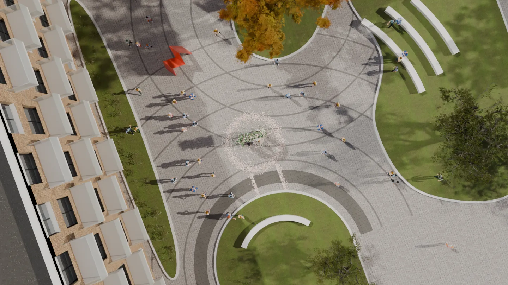
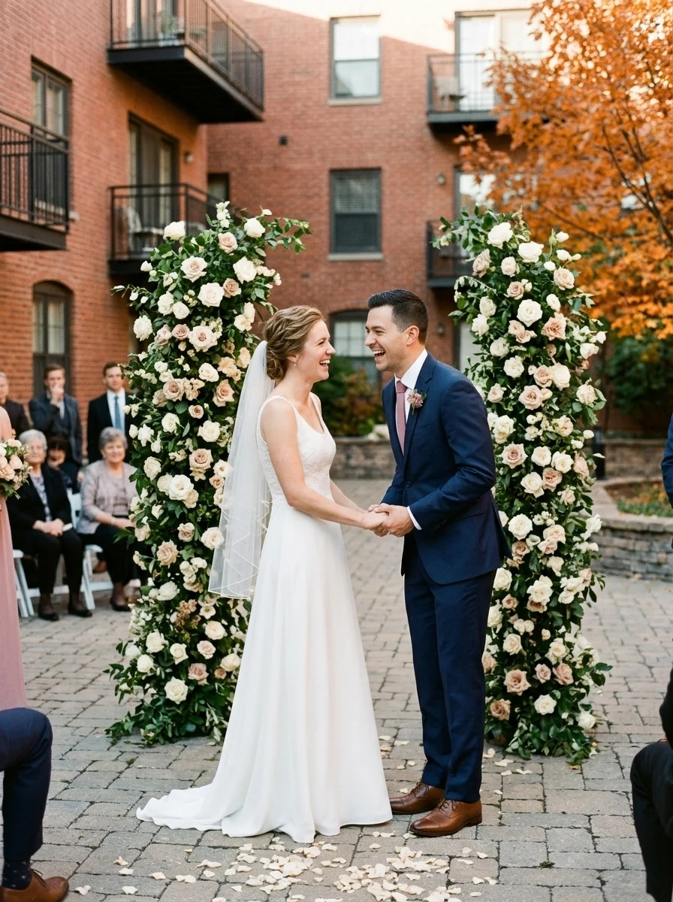
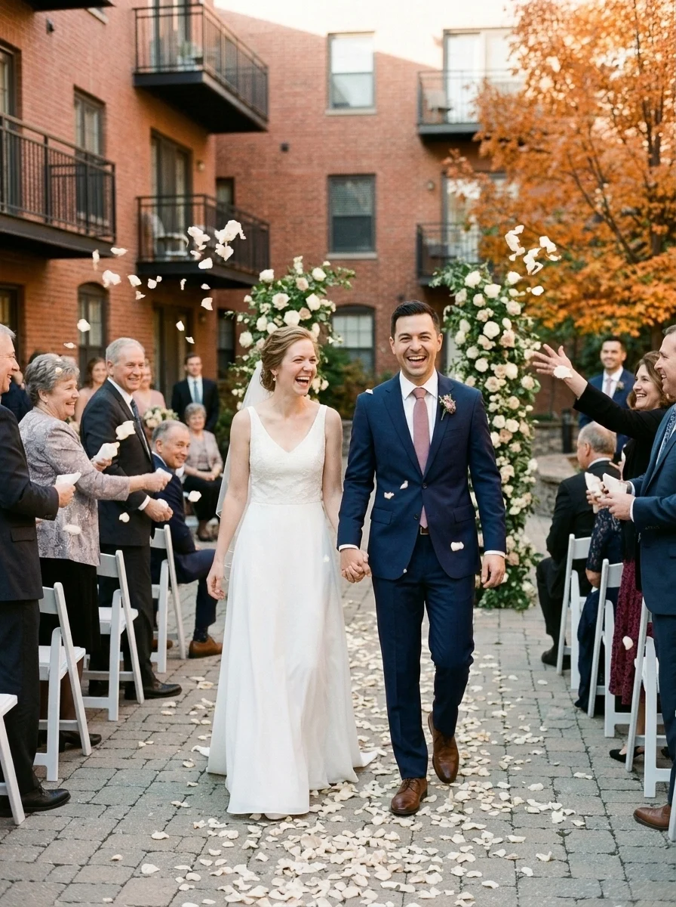
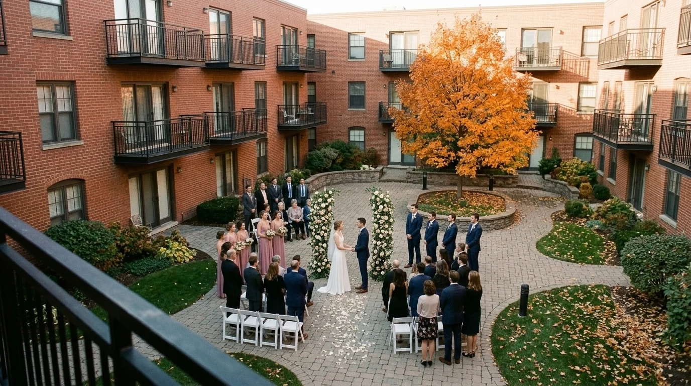
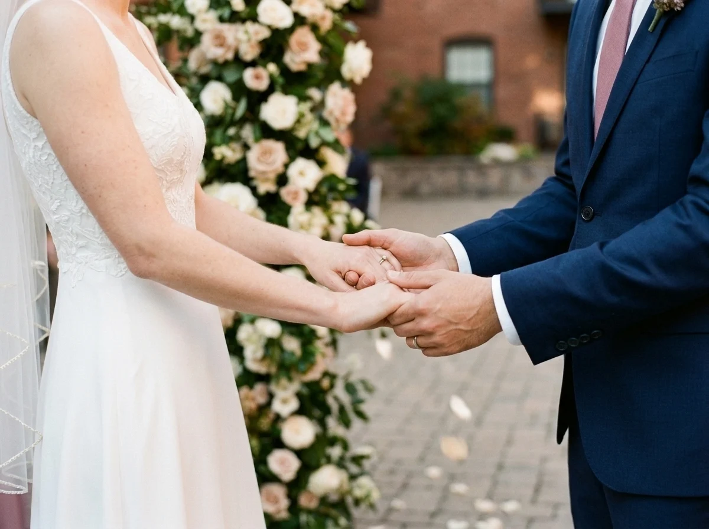

Garden formal
Suits and dresses, colour welcome. The ceremony is outdoors on paving, so block heels beat stilettos.

are getting married where they first met.
Under the arch, three o'clock Come and stand with us.
(02) Our story
Naomi moved into the third floor of the east block in the spring of 2018. Elias had been on the second floor of the west block for a year, and had opinions about the bins.
They met properly at a residents' meeting about the lawn. She wanted wildflowers; he wanted somewhere to kick a ball. The lawn got both, and they got each other's numbers "for the committee".
He proposed under the big tree on a Tuesday, with the neighbours pretending not to watch from their balconies. It only seemed right to come back to the same paving stones to say the rest out loud.
— days to go


(03) The day

(04) The place
The courtyard between the four blocks, where the paths cross. Follow the petals.

Suits and dresses, colour welcome. The ceremony is outdoors on paving, so block heels beat stilettos.
Truly. If you would like to give something, there is a small honeymoon fund on the day.
There is a quiet room off the garden room, and the lawn is theirs after the ceremony.
Please reply by 1 May 2027, so the long tables are long enough.
Questions? Write to hello@naomiandelias.example